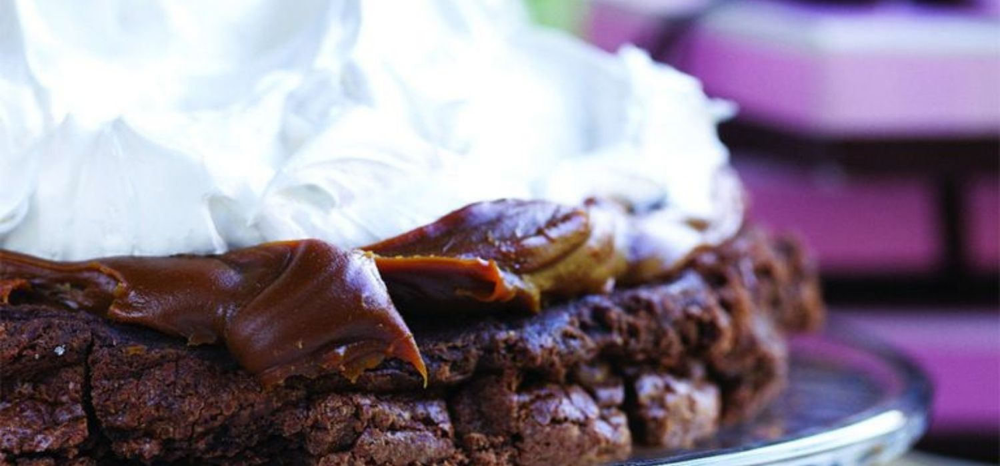
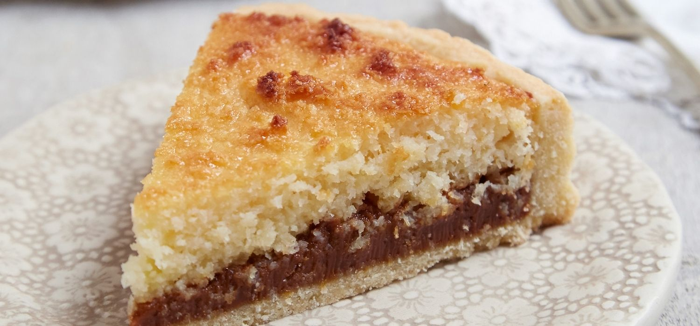

Tartas sin gluten

Marquise de chocolate
Una receta ideal para los amantes del chocolate. ¡No vas a poder creer la cremosidad y sabor de esta torta marquise!
Ver receta
Cheescake Oreo
Mira esta deliciosa receta de Cheesecake de Oreo. Esta es la receta sobre el famoso Cheesecake de Oreo, excelente y súper rico!
Ver receta
Tarta cabsha
Chocolate y dulce de leche, una combinación deliciosa para los mas golosos que no puede fallar.
Ver receta

Tarta Coco y Dulce de Leche
La tarta de coco y dulce de leche es un clásico fácil de preparar.
Ver receta
Pastafrola
La pasta frola, o pastafrola, es una tarta tradicional decorada con tiras de masa y rellena de dulce.
Ver receta